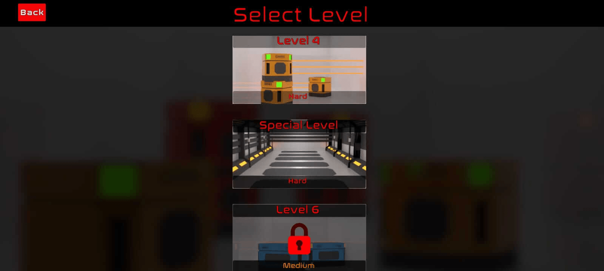
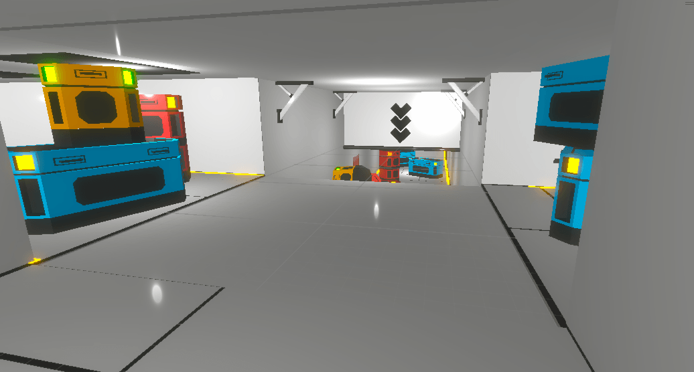
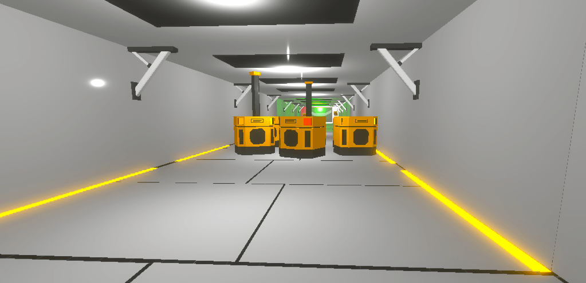

Hover Flux
Gameplay Media
Authentic gameplay footage and screenshots from the completed 10-level build.




Project Overview
Hover Flux marks a major milestone as my first fully completed and released mobile game. Beyond just finishing the project, it served as a critical learning ground for mobile performance optimization.
During development, I learned the importance of material batching specifically, why assigning a unique material to every single game object destroys performance. I applied this foundational knowledge directly to my current project, Cores & Scrap, by utilizing shared materials to keep draw calls low.
I also developed a strict 3D modeling workflow for polygon control. I learned to model assets by first capturing the exact visual silhouette and design intent I wanted, and then systematically optimizing the topology and polygon count to meet mobile performance targets without sacrificing the core aesthetic.
My Role & Responsibilities
As the solo developer under the 01 Theory identity, I handled the entire development pipeline. This included gameplay implementation, level development, performance profiling, rigorous testing, and preparing final playable builds for distribution.
Technical Challenge: 3D Environment Optimization
One of the most significant technical hurdles was optimizing a complex tunnel environment to ensure smooth performance on lower-end mobile devices.
- The Problem: The initial tunnel asset had a high polygon count, causing frame rate drops on mobile hardware.
- The Solution: I systematically reduced the triangle count of the tunnel environment from approximately 20,000 down to 1,863, while maintaining the visual integrity of the level. I also optimized draw calls, achieving a batch count of around 500 for the scene.
- The Result: On a Tecno Spark 30C test device, the optimized build consistently achieved approximately 40–50+ FPS, transforming the game from a stuttering experience into a smooth, playable mobile game.
Lessons Learned
This project taught me the critical importance of profiling early and often. I learned that creative level design must always be balanced with technical limitations, especially for mobile platforms. Iterating on performance is just as important as iterating on gameplay.